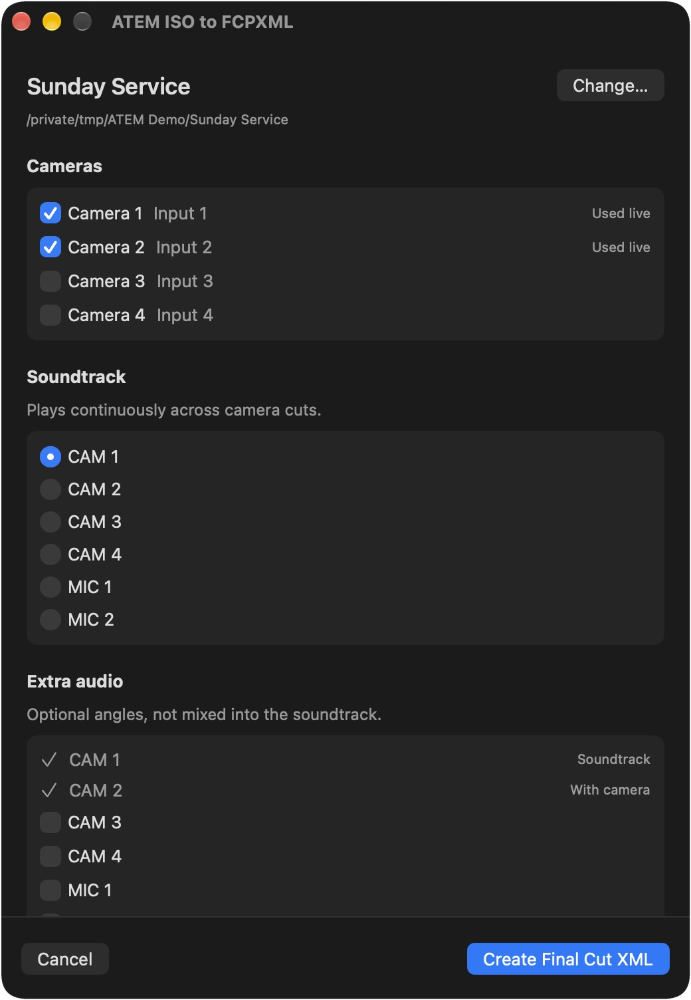
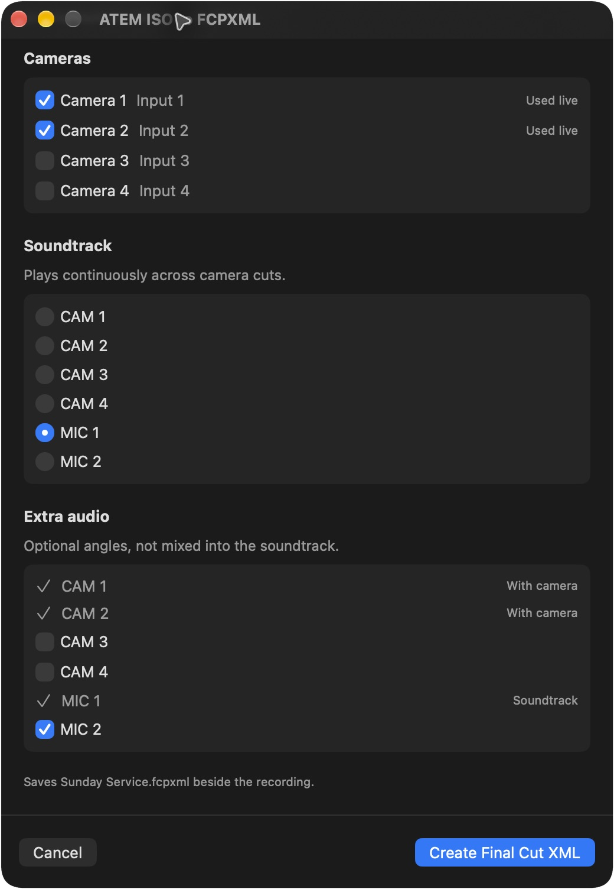
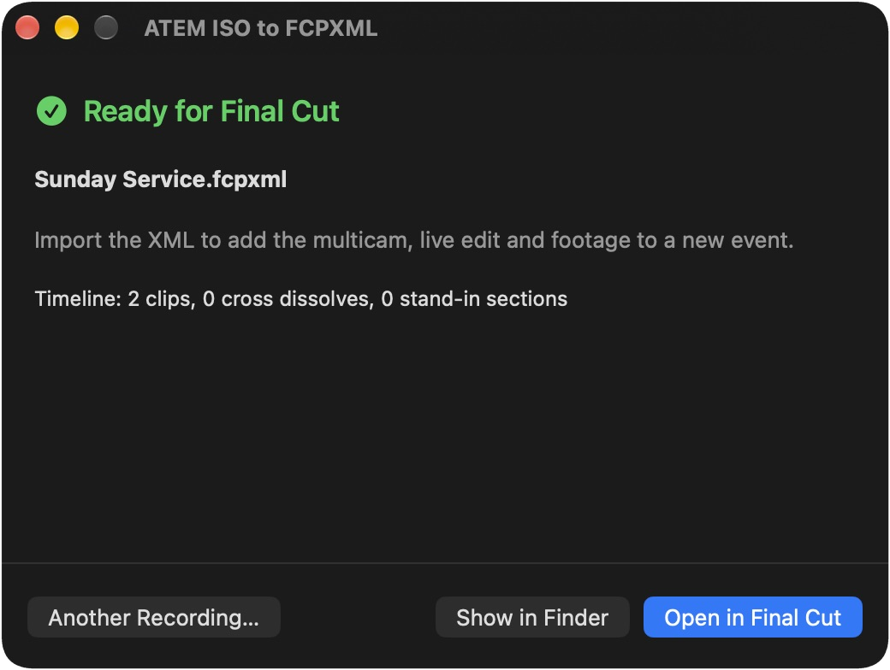

Does it use the WAV files?
Each camera uses its matching WAV, or MP4 audio if the WAV is missing. Choose one WAV as the soundtrack across all cuts. Other WAVs can be included as separate audio angles.
ATEM ISO to FCPXML · Free & open source
Convert your Blackmagic ATEM ISO recording into a Final Cut Pro multicam project with the live cuts and WAV audio.
Mac app preview · macOS 13+
 ATEM .drp
ATEM .drp .fcpxml
.fcpxml Final Cut Pro
Final Cut Pro No DaVinci Resolve export needed. Use the .drp written by your ATEM.
No DaVinci Resolve export needed. Use the .drp written by your ATEM.
Choose your cameras and audio in one window. Build the Mac app preview.

Choose the ATEM folder or its .drp file. You can also open it from Finder’s Quick Actions.

Inputs used in the live switch start selected.

Choose one soundtrack. Add other WAVs as audio angles without mixing them into the live edit.

Import the XML for your multicam clip, live edit, and selected footage. The original files are not changed.
Camera cuts and mix transitions become editable multicam cuts and dissolves. Other effects use the program video or a marked dissolve.
Conversion details| On the ATEM | In Final Cut |
|---|---|
| Camera cuts | Editable multicam cuts. |
| Mix transitions | Cross Dissolves. |
| Dip, wipe, DVE, stinger | Cross Dissolves with markers naming the original effect. The command-line option can use the program recording instead. |
| Media Player still | A separate still angle. |
| Keys and fades to black | Video from the program recording, with a marker. Requires the program file. |
| Camera and mic audio | Matching WAVs when present. One selected soundtrack across camera cuts. |
A Mac download with Python included is being prepared. Until it is signed and released, you can build the preview using the commands below.
Build instructionsgit clone https://github.com/jeffalldridge/atem-iso-to-fcpxml.git
cd atem-iso-to-fcpxml
python3 scripts/build_macos_app.py --installThis source build requires macOS 13+ and Python 3.9+. Use the current source; the older 1.0.0 ZIP has a dialog error.
For command-line use: Use the Python script.
ATEM Mini Pro ISO · 1080p60 · Final Cut Pro 12.4
Tested with two recordings imported into Final Cut. The XML targets Final Cut Pro 10.6 and later. Other versions, ATEM models, frame rates, and firmware remain untested.
Test results and known limitsEach camera uses its matching WAV, or MP4 audio if the WAV is missing. Choose one WAV as the soundtrack across all cuts. Other WAVs can be included as separate audio angles.
Yes. The app reads your input names from the ATEM log, and you can rename the recording folder. Keep the files and subfolders inside it unchanged. Use the .drp written by the ATEM; a project exported from Resolve is a different format.
No. It saves an .fcpxml beside your .drp and leaves the media where it is. When importing into Final Cut, choose whether to copy the footage or link to it. Keep the SSD connected until copying finishes, or while editing linked footage.
Import creates a new event with the multicam, project, and source clips. You can move them to another event afterward.
Check audio sync, the end of the recording, and any markers in the timeline. The app warns about timing differences but does not correct them. Without the program recording, sections with keys use the first selected camera instead. Stills changed during recording may be missing.